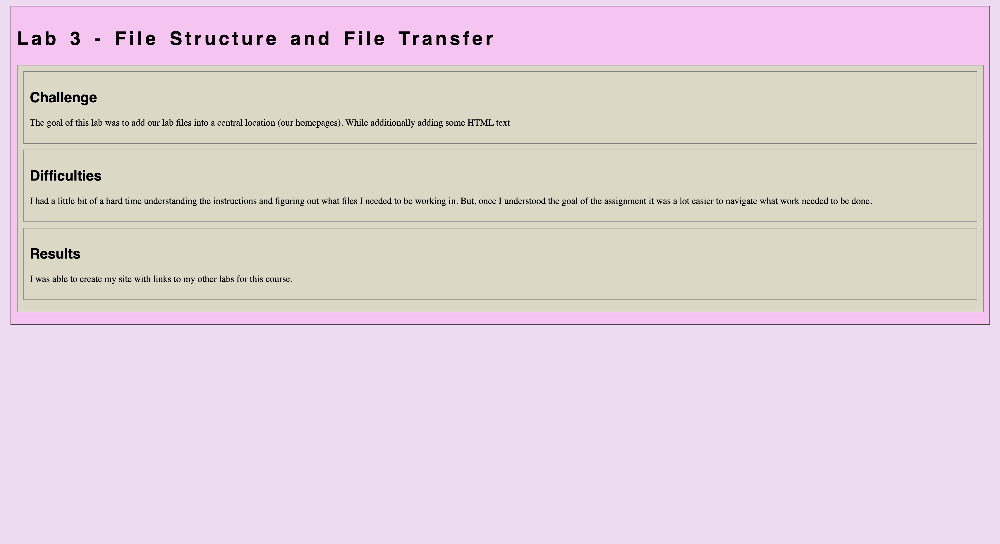
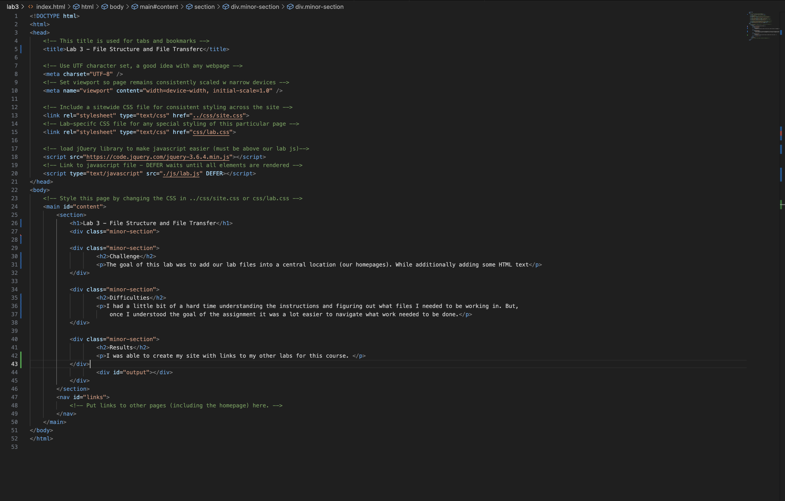

Lab 3 - File Structure and File Transfer
Challenge
The goal of this lab was to add our lab files into a central location (our homepages). While additionally adding some HTML text
Difficulties
I had a little bit of a hard time understanding the instructions and figuring out what files I needed to be working in. But, once I understood the goal of the assignment it was a lot easier to navigate what work needed to be done.
Results
I was able to create my site with links to my other labs for this course.
Results

Screenshot of HTML source code in the default browser.
Screenshot of HTML source code in VS Code.